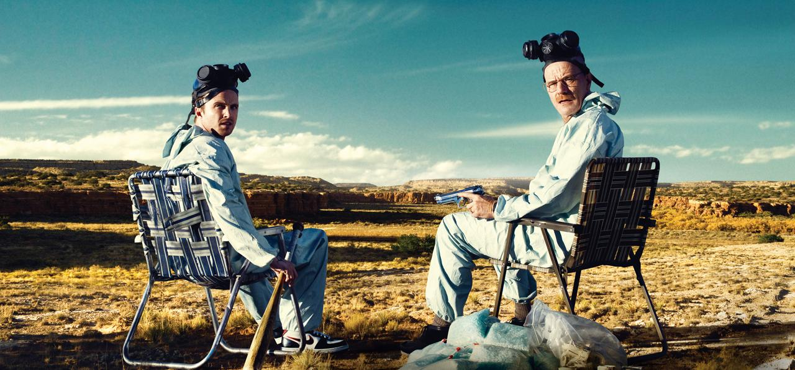
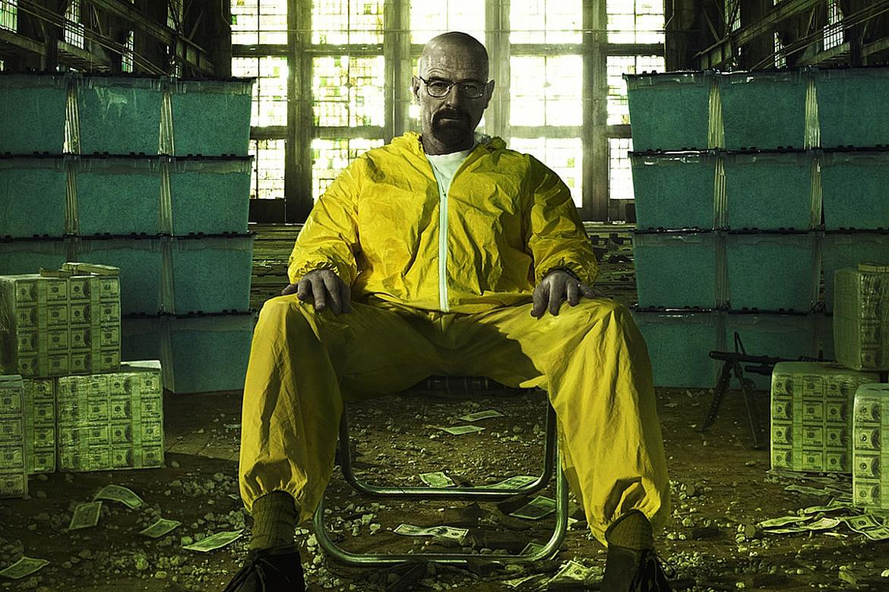

1 Temporada

Na primeira temporada de Breaking Bad, Walter White, um professor de química diagnosticado com câncer de pulmão terminal, decide entrar no mundo do tráfico de drogas para assegurar o futuro financeiro de sua família. Ele se associa a Jesse Pinkman, um ex-aluno e pequeno traficante, para produzir metanfetamina de alta qualidade. A temporada explora os desafios de Walter em equilibrar sua nova vida criminosa com a sua vida familiar, enquanto enfrenta perigos crescentes e começa a lidar com as consequências morais e legais de suas ações.
2 Temporada
Na segunda temporada de Breaking Bad, a produção e venda de metanfetamina de Walter e Jesse se intensificam, atraindo a atenção de rivais e da lei. O relacionamento entre Walter e Jesse se torna mais tenso e complexo, especialmente quando começam a enfrentar uma série de desafios inesperados, incluindo a tragédia do acidente aéreo que ocorre como consequência indireta de suas ações. A temporada revela a crescente transformação de Walter de um simples professor para um jogador significativo no mundo das drogas, enquanto lida com a deterioração de sua vida familiar e os perigos de seu novo estilo de vida.
3 Temporada
.jpg)
Na terceira temporada de Breaking Bad, Walter e Jesse se envolvem ainda mais profundamente no submundo do tráfico de drogas, formando uma aliança com o temido cartel mexicano. A temporada é marcada por conflitos intensos, incluindo a chegada de Gustavo "Gus" Fring, um sofisticado e implacável distribuidor de drogas que oferece a Walter uma oportunidade de expandir seu negócio. Enquanto isso, a relação de Walter com sua esposa Skyler se deteriora ainda mais, e o confronto com o violento traficante Tuco Salamanca leva a uma série de eventos dramáticos e mortais.
4 Temporada
.jpg)
Na quarta temporada de Breaking Bad, a tensão entre Walter e Gus atinge seu ponto máximo, com Walter tentando superar seu chefe e estabelecer seu domínio no mundo das drogas. A temporada é marcada por um jogo psicológico e mortal entre os dois, enquanto Walter e Jesse enfrentam ameaças constantes e fazem alianças perigosas. A busca de Walter por poder e controle se torna mais intensa, levando a uma série de reviravoltas e confrontos dramáticos. A temporada culmina em um confronto decisivo que altera o curso dos eventos e o futuro dos personagens.
5 Temporada
A quinta e última temporada de Breaking Bad é dividida em duas partes e fecha a saga de Walter White. Na primeira parte, Walter, Jesse e Mike começam a estabelecer um império de metanfetamina, mas enfrentam novos desafios e traições. A segunda parte concentra-se na queda de Walter e na destruição de tudo que ele construiu, enquanto o impacto de suas ações sobre sua família e seus associados se revela devastador. A temporada culmina em um clímax intenso e emocional, com a resolução dos conflitos e o desfecho das tramas de forma poderosa e impactante.
Quer ver resumo de outras séries?
clique aqui ↓